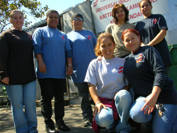
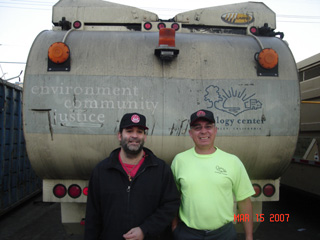

Submitted on Tue, 09/18/2007 - 3:49pm
 By x361519
By x361519
As the Starbucks Workers Union is in its third year of struggling for the rights of baristas and moving to trial in New York, we at the Bay Area Starbucks Workers Union are continuing our push to unionize workers and respond to the unfair actions that Starbucks commits against their employees. Through any means available, we have – and still are – pushing to organize baristas into One Big Union.
Weekly informational pickets have become a great weapon that has been useful twofold: to let passers-by know about the unjust labor practices that Starbucks has committed across the country and to give a face to the union for the workers. Although not central to the fight, positive consumer and community response gives the union leverage against local Starbucks locations by consumer grievances and participating in e-mail campaigns. Such tactics have worked in other IWW campaigns such as Shattuck Cinemas and feel it can in this one also. Informational pickets also give a face to the union, something that other business unions often look over. By seeing active members on the streets pushing for Starbucks to own up to its destructive labor practices, the employees will see we are truly dedicated to their fight and no other.
Submitted on Sat, 09/15/2007 - 5:12am
By Fellow Worker Bruce Valde.
By now the story of what happened when truck drivers and loaders at Berkeley’s Ecology Center “curbside” recycling program refused to work until their demands were met is the stuff of legend.
This report adds more information concerning the IWW recycling sorters at a company in the same block who stopped worked and marched in solidarity to a meeting of the Curbside drivers and loaders in the midst of the work stoppage, which lasted from 6 am until 1 pm on Monday, September 10th.
Workers from Community Conservation Centers marched into the Ecology Center trailer in support of their co-unionists. The 25 workers at the Buyback are members of the IWW. When informed that trucks would not roll and that the drivers/loaders were holding a meeting, the workers at the Buyback stopped work and held a solidarity / safety meeting of their own.
Submitted on Thu, 09/13/2007 - 10:53pm
 By Fellow Worker Duncan
By Fellow Worker Duncan
Hello Fellow Shattuck Workers,
This is the latest update on Union dealings with the Company. Last time, we mentioned that Unfair Labor Practice charges were filed against Landmark. These charges had to do with the Company review process and wage increases. While many people had gotten some reviews none had received all three reviews as shown in Landmark’s own handbook.
Because this involves money, those missed reviews add up to retroactive pay. As we pointed out before, the days after the charges were filed had the company doing a flurry of reviews. The company wants us to sign off on the back pay/raises immediately. We decided to wait and be sure every worker received a raise, back pay, or both before we agreed. Subsequently, the Company recognized during negotiations, the need to compensate missed reviews with a higher amount of wage increase not based on the point system.
Submitted on Tue, 09/11/2007 - 2:09pm
By Mike H., Matt K., Steve O., and Bruce V.
The recycling collection workers at the Ecology Center's Curbside Recycling Program have long sparred with management over working conditions. The IWW has represented this shop since 1989. On Monday, September 10, 2007, the recyclers held a stop work meeting and refused to move their equipment until their demands were met.
The latest struggle occurred when the City of Berkeley added waste collection routes to their collection program. The City of Berkeley waste collection workers are employed directly by the city and represented by a SEIU 790, a "Change to Win" business union. The Ecology Center is operated as an independent non-profit which receives city money to help fund its recycling program.
Unlike many cities that outsource their municipal operations to private entities and non-profits (often to reduce operating costs and weaken labor union solidarity), the Berkeley Ecology Center has a unique relationship with the City of Berkeley. The Ecology Center created the city's curbside recycling program long before such programs were standard services.
Apparently, the contract with the city requires the Ecology Center to match their collection routes with the city's, even though the programs are mostly separate from each other. Prior to the city's change, the recyclers worked seven routes daily, three of which were duo-routes (having two workers per truck) and the remainder were solo.
Ecology Center management proposed adding an additional route, but making each of the eight routes solo routes. The Ecology Center recyclers have a route committee system, described in the union contract, though Management still has the official power to make the changes. While the union members on the route committee signed off on the changes, they were not aware of how the changes would affect the work once put into practice.
After the first week of the change, it was clear that the eight solo-route plan was universally unpopular among the union workers. The union recyclers met on Saturday, September 8, 2007, along with organizers from the Bay Area IWW branch and some rank & file workers from the city waste collection program. They agreed that they preferred to retain the duo routes.
On Monday, the crew refused to operate their trucks until Management agreed to restore the three duo routes. After it was clear that no trucks would move until the union's demands were addressed, Daniel Maher, the operations manager, agreed to consider alternatives to the new, eight-solo route plan. The union crew demanded three duo routes and five solo routes. Maher rejected this plan and asked the crew to "vote" on an alternative.
At first, Mr. Maher tried to single out shop steward, Mike Hudgins, and divide the crew, but this tactic didn't work. The crew was adamant about their demands and the strongest voices were those recyclers with the lowest seniority.
One hour later, the union crew revealed that their "vote" was to stand firm by their demands. Mr. Maher, having encouraged the crew to vote on an alternative decided that democracy was only acceptable if the outcome was acceptable to his interests and asked the crew to "vote" again! So the union crew repeated the process. One hour later, the results were still the same! It was obvious that the union wouldn't budge!
Submitted on Wed, 08/29/2007 - 4:42am
 WHAT: After being led to believe that their fight for equal pay was over and won, Cal students employed by Cal Dining learned today that they are still paid less than their coworkers. Though Cal students received a raise in July to $11.25/hour (starting pay), other workers, including high school students, are now getting paid a starting wage as high as $11.93/hour.
WHAT: After being led to believe that their fight for equal pay was over and won, Cal students employed by Cal Dining learned today that they are still paid less than their coworkers. Though Cal students received a raise in July to $11.25/hour (starting pay), other workers, including high school students, are now getting paid a starting wage as high as $11.93/hour.
“It’s just sad,” said Foothill Dining Commons employee and Student Worker Action Group (SWAG) member Tristan Bunner, “We thought that this was over and done with and had moved on to other demands, only to learn that we had been mislead. We’re back to square one when it comes to our fight with UC.”